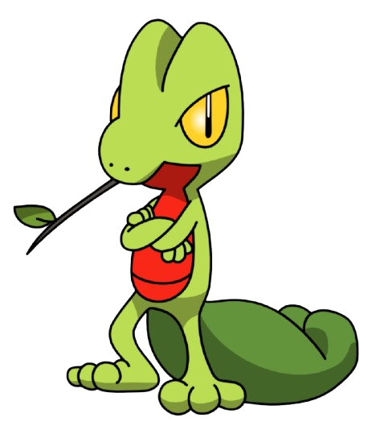

Estudo Ciência da Computação na UFMA, em São Luís. Em FRC e FTC, atuei com programação, coordenação técnica e scouting: coletar dados das partidas e transformá-los em decisão de estratégia. Hoje aplico essa mesma lógica a dados de sensores e pipelines, e busco minha primeira vaga como Engenheiro de Dados Júnior.
São Luís, MA | UFMA
Iago Queiroz
Estudante de Ciência da Computação com experiência em robótica competitiva. Construo projetos de Engenharia de Dados com Python e SQL.

Buscando vaga de Engenharia de Dados JúniorSobre
Perfil
Experiência
Experiência
FRC Colossus
SESI (Escola SESI Anexo)
Estágio formal de um ano no SESI, atuando como gestor de projetos de TI e técnico da equipe Colossus, uma das equipes pioneiras de FRC no Maranhão. Responsável pela gestão de projetos e chefia de engenharia da equipe: mentoria e treinamento dos integrantes, gestão de projetos sociais, patrocínios e financeiro, além de atuação prática em maquinário, elétrica, modelagem, usinagem, montagem e testagem dos robôs. Em paralelo, monitoria técnica das equipes de FTC e FRC na Escola SESI Anexo, orientando documentação, modelagem e montagem de protótipos ao longo da temporada.
FTC Falcons
Co-fundador
Inspire Award — primeiro ano de competição
Co-fundador da Falcons, primeira equipe de FTC do Maranhão, vencedora do Inspire Award já no primeiro ano de competição. Como Engenheiro-Chefe e Desenvolvedor, responsável pelo ciclo de vida completo do robô: concepção, design, modelagem, impressão 3D, montagem, programação e testagem. Atuou também como piloto em competição e liderou reuniões com patrocinadores, fornecedores e autoridades, além de contribuir diretamente nas apresentações aos juízes.
Projetos
Trabalhos
01 Em destaque
PortMind — Pipeline de Dados
Pipeline de dados para monitoramento de dutos do Porto do Itaqui. Simula sensores de pressão com EPANET/WNTR, gera telemetria contínua por API, detecta anomalias com base no histórico das leituras e transforma cada detecção em ocorrência e alerta, sempre com confirmação humana.
Contexto: Desenvolvimento do Digital Twin da rede de dutos, com base no modelo EPANET, mantendo a mesma estrutura de nós, tubulações e junções da adaptação paralela em FESTO/FluidSIM para evitar divergência entre os modelos.
Em destaque
02 Projeto complementar
PortMind — Painel de Controle
Interface web do mesmo projeto: dashboard, mapa, incidentes, alertas e auditoria para o centro de comando operacional. Frontend em React e TypeScript, com backend em Fastify e Prisma em evolução.
Contexto: Atuação na arquitetura e nas decisões de projeto do painel, da definição do fluxo de dados até a visualização.
Stack
Ferramentas
Stack principal
Usado em: PortMind
Usado em: PortMind
Usado em: PortMind e robótica
Usado em: PortMind
Usado em: pipeline PortMind
usado em projetos específicos
Usado em: painel PortMind
Usado em: painel PortMind
Usado em: interações do portfólio
Usado em: painel e portfólio
Usado em: painel e portfólio
Usado em: simulação hidráulica
Usado em: robótica FTC
Usado em: versionamento
Contato
Vamos conversar?